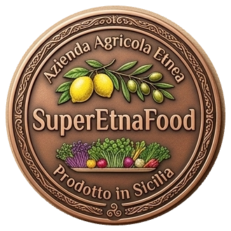

Acireale · versante est dell'Etna550 alberi su settemila metri quadri di terra lavica. Fra l'albero e la tua cucina non c'è nessun magazzino: la raccolta parte il giorno dopo il tuo messaggio.
alberi in filare
di terra nera
fra ordine e raccolta
| Prodotto | Varietà | Finestra | Formato | Stato |
|---|---|---|---|---|
| Verdello | Monachello, Nostrale, Femminello Zagara Bianca | Agosto – settembre | 5, 10 o 20 kg | Sotto le forbici |
| Primofiore | Le stesse tre varietà | Ottobre – dicembre | 5, 10 o 20 kg | Si prenota |
| Bianchetto | Le stesse tre varietà | Aprile – giugno | 5, 10 o 20 kg | Dorme |
| Microgreen | Dieci varietà in rotazione, più quelle su richiesta | Tutto l'anno, su semina | Vassoio o vasetto | A chiamata |
Quanto entra in cassetta lo decide la giornata di raccolta. Il prezzo lo scrivo in chat, prima di salire sull'albero.
Monachello per la cottura e le conserve, Nostrale da spremuta, Femminello Zagara Bianca per la pasticceria.
Nessuna scorta: si semina quando ordini e si taglia il giorno del ritiro. Dieci varietà in rotazione.
Dal tuo messaggio al taglio, il tempo che serve alla varietà.
Su fibra di cocco o compost, con l'acqua del pozzo sotto la lava.
Né trattamenti, né corrieri, né giorni di scaffale.
Un fiore, tre stimmi, nessuna scorta: ogni annata finisce prima della prossima fioritura.
Gli stessi filari, la stessa acqua, un impianto che ha più anni di me.
Rispondo io, dal campo: prezzo del giorno, quantità e data del ritiro.